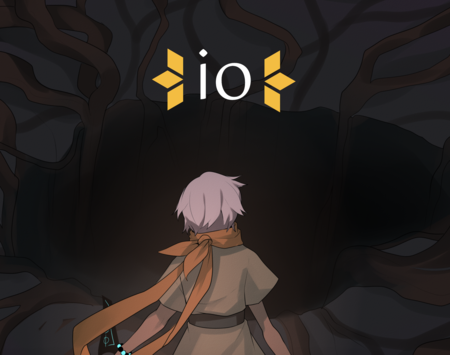
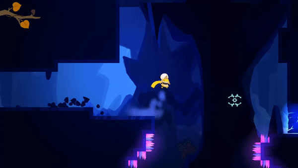

About
Io is a 2D adventure platformer made by the University of Michigan's video game development club, where you use Io's teleportation and time-slow abilities to traverse the deadly terrain and monsters of a deep abyss.
Development Info- Developed by WolverineSoft Studio
- 3.5 month development cycle (01/11/2020 - 04/24/2020)
- 57 developers
- Unity Engine
- PC, Mac target platforms
- Provided direction and feedback to designers, artists, programmers, and audio engineers
- Managed game content, scope, and vision
- Designed and balanced levels

What I'm Proud of
- Maintained comprehensive documentation outlining the direction for the different aspects of the game
- Acheived good game-feel by beginning playtesting of the character controller very early on
- Establishing a throughline aesthetic allowed for consistent enemy and environmental designs amongst different artists
- All team members' (not just designers) ideas were heard and discussed in brainstorming sessions
- Radical candor allowed for productive discussions regarding feedback and course-correction

What I Could've Done Better
- Struggled to keep up with the demand for direction amongst the team
- Didn't utilize core mechanics of teleportation and slow motion to their fullest
- Provided too contrasting direction between animatics and level art teams, leading to a less cohesive aesthetic
- Disproportionally focused on level design over combat, leading to the latter feeling unfinished in comparison
- Struggled to maintain team morale as we moved remote due to the COVID-19 pandemic

Lessons I Learned
- Completing an early vertical slice can allow for earlier playtesting by establishing a playable gameplay loop
- Trust in teammates to handle straight-forward critique early on to avoid lost work later
- Content cuts can boost morale if done decisively by allowing members to focus on improving their other work
- Tweaking core systems late in development can break existing scenarios like platforming challenges and should be avoided
- Using level "hubs" can make a linear experience feel less-so